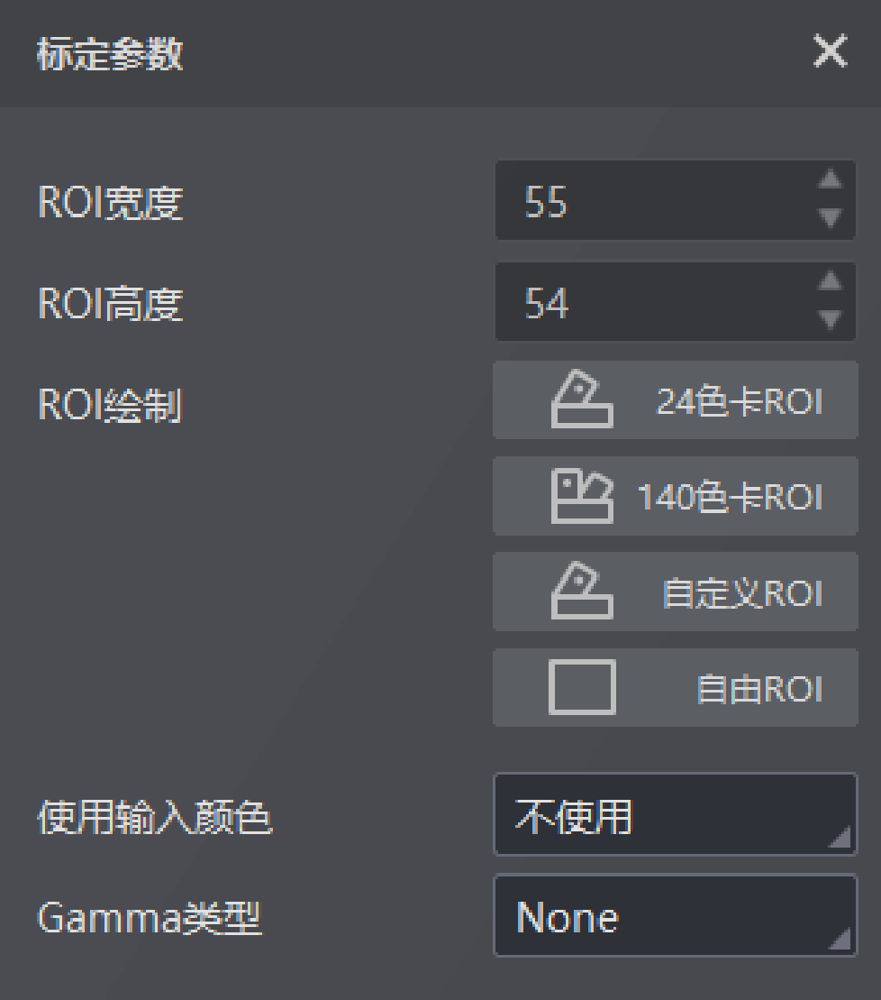

CCM是一个3*3的色彩校正矩阵，可调整RGB中红、绿、蓝三色分量的比例关系。
使用CCM模块时可先进行标定再校正，也可省略标定过程，直接导入校正参数进行图像校正，通过点击直接校正实现。
CCM标定支持输入多张标定图像和参考图像，对校正前的标定图像和参考图绘制ROI以提取输入颜色和参考颜色。
图像列表最多支持导入24张图像。
支持24色卡ROI、140色卡ROI、自定义ROI和自由ROI四种绘制方式，具体介绍可参考图像降噪章节。
对于CCM标定，绘制ROI时预览窗口的图像上会显示ROI序号。
不使用：无输入颜色。
原始颜色：点击原始颜色并选择需导入的txt文件，或者点击增加行并选择原始颜色进行添加。
参考颜色：点击参考颜色并选择需导入的txt文件，或者点击增加行并选择参考颜色进行添加。
全部颜色：点击原始颜色或参考颜色可分别导入参考颜色的txt文件，或者点击增加行并选择原始颜色和参考颜色进行添加。
txt文件记录颜色格式的要求：一行代表一个颜色，按照r,g,b的格式写入，不允许有空白行；原始颜色和参考颜色应分别存在两个文件中。
原始颜色和参考颜色个数限制均为140，且原始颜色与参考颜色个数需保持一致。
输入颜色过程中如需删除，可点击删除行。
可根据实际需求进行选择，分为以下4种。

图 1 CCM标定参数